#1140: [AR] Patch 02/25/21 cum. hosp and vent
Issue number 1140
hmhoffman opened this issue on April 2, 2021, 6:18 AM PDT
State: AR
Dates affected: 02/25/21
Describe the issue: On February 25, 2021, Arkansas updated their Ever hospitalized and Ever on ventilator after the time of our daily update. We are patching it from the graphic on their official Arkansas Department of Health twitter.
Links: https://twitter.com/ADHPIO/status/1365102980496830466/photo/1
Comments
#1140: [AR] Patch 02/25/21 cum. hosp and vent
Issue number 1140
hmhoffman opened this issue on April 2, 2021, 6:18 AM PDT
State: AR
Dates affected: 02/25/21
Describe the issue: On February 25, 2021, Arkansas updated their Ever hospitalized and Ever on ventilator after the time of our daily update. We are patching it from the graphic on their official Arkansas Department of Health twitter.
Links: https://twitter.com/ADHPIO/status/1365102980496830466/photo/1
Comments
Rows edited: 1 AR 2021-02-25 hospitalizedCumulative: 14714 (was 14649) onVentilatorCumulative: 1516 (was 1509)
#1067: [AR] Patch late 01/13/21 update
Issue number 1067
hmhoffman opened this issue on January 14, 2021, 1:19 PM PST
State: AR
Dates affected: 01/13/21
Describe the issue: On January 13, 2021, Arkansas updated their COVID-19 dashboard after the time of our daily update.
Comments
Rows edited: 1 AR 2021-01-13 positive: 262020 (was 259553) negative: 2006960 (was 1997863) hospitalizedCurrently: 1295 (was 1354) inIcuCurrently: 426 (was 452) onVentilatorCurrently: 241 (was 251) recovered: 232709 (was 229700) death: 4186 (was 4121) deathConfirmed: 3470 (was 3424) deathProbable: 716 (was 697) probableCases: 49556 (was 48680) totalTestsViral: 2219424 (was 2208736) negativeTestsViral: 2006960 (was 1997863) positiveCasesViral: 212464 (was 210873) totalTestsPeopleAntigen: 299123 (was 294790) positiveTestsPeopleAntigen: 58485 (was 57537) negativeTestsPeopleAntigen: 240638 (was 237253)
On January 14, 2021, we patched Arkansas' late January 13, 2021 update. However hospitalization numbers from January 14, 2021 were accidentally used, and this mistake was corrected on January 14, 2021.
Rows edited: 1 AR 2021-01-13 hospitalizedCurrently: 1362 (was 1295) inIcuCurrently: 432 (was 426) onVentilatorCurrently: 255 (was 241)
#1067: [AR] Patch late 01/13/21 update
Issue number 1067
hmhoffman opened this issue on January 14, 2021, 1:19 PM PST
State: AR
Dates affected: 01/13/21
Describe the issue: On January 13, 2021, Arkansas updated their COVID-19 dashboard after the time of our daily update.
Comments
Rows edited: 1 AR 2021-01-13 positive: 262020 (was 259553) negative: 2006960 (was 1997863) hospitalizedCurrently: 1295 (was 1354) inIcuCurrently: 426 (was 452) onVentilatorCurrently: 241 (was 251) recovered: 232709 (was 229700) death: 4186 (was 4121) deathConfirmed: 3470 (was 3424) deathProbable: 716 (was 697) probableCases: 49556 (was 48680) totalTestsViral: 2219424 (was 2208736) negativeTestsViral: 2006960 (was 1997863) positiveCasesViral: 212464 (was 210873) totalTestsPeopleAntigen: 299123 (was 294790) positiveTestsPeopleAntigen: 58485 (was 57537) negativeTestsPeopleAntigen: 240638 (was 237253)
On January 14, 2021, we patched Arkansas' late January 13, 2021 update. However hospitalization numbers from January 14, 2021 were accidentally used, and this mistake was corrected on January 14, 2021.
Rows edited: 1 AR 2021-01-13 hospitalizedCurrently: 1362 (was 1295) inIcuCurrently: 432 (was 426) onVentilatorCurrently: 255 (was 241)
#1061: [AR] Remove values carried over after Arkansas stopped reporting Total, Positive and Negative Antigen tests (specimens)
Issue number 1061
jaclyde opened this issue on January 11, 2021, 4:48 PM PST
Labels Data quality
State: Arkansas
Issue: On September 18, 2020 Arkansas stopped reporting Total/Positive/Negative Antigen tests (specimens) and began reporting Total/Positive/Negative Antigen tests(people). We carried over the last available value, but the metric has not returned, so the value is out of date and potentially confusing. We will be keeping the time series as provided by the state, but removing the carried over values from September 18, 2020, forward.
Comments
- [X] make GH issue
- [X] double check the metrics aren't being reported somewhere by the state
- [X] add public note
- [X] remove carried over values
- [X] null out source notes
- [X] null out WS2 values
Values removed: Changes (1).txt
#1061: [AR] Remove values carried over after Arkansas stopped reporting Total, Positive and Negative Antigen tests (specimens)
Issue number 1061
jaclyde opened this issue on January 11, 2021, 4:48 PM PST
Labels Data quality
State: Arkansas
Issue: On September 18, 2020 Arkansas stopped reporting Total/Positive/Negative Antigen tests (specimens) and began reporting Total/Positive/Negative Antigen tests(people). We carried over the last available value, but the metric has not returned, so the value is out of date and potentially confusing. We will be keeping the time series as provided by the state, but removing the carried over values from September 18, 2020, forward.
Comments
- [X] make GH issue
- [X] double check the metrics aren't being reported somewhere by the state
- [X] add public note
- [X] remove carried over values
- [X] null out source notes
- [X] null out WS2 values
Values removed: Changes (1).txt
#1060: [AR] Patch 01/10/21 late update
Issue number 1060
hmhoffman opened this issue on January 11, 2021, 8:24 AM PST
State: AR
Dates affected: 01/10/22
Describe the issue: On January 10, 2021, Arkansas updated their COVID-19 dashboard after the time of our daily update.
Comments
Rows edited: 1 AR 2021-01-10 positive: 255076 (was 251746) negative: 1984846 (was 1953123) hospitalizedCurrently: 1340 (was 1346) inIcuCurrently: 441 (was 426) onVentilatorCurrently: 319 (was 223) recovered: 223513 (was 219887) death: 4043 (was 4010) deathConfirmed: 3363 (was 3338) deathProbable: 680 (was 672) probableCases: 47327 (was 46853) totalTestsViral: 2192595 (was 2158016) negativeTestsViral: 1984846 (was 1953123) positiveCasesViral: 207749 (was 204893) totalTestsPeopleAntigen: 286218 (was 284502) positiveTestsPeopleAntigen: 55915 (was 55322) negativeTestsPeopleAntigen: 230303 (was 229180)
#1060: [AR] Patch 01/10/21 late update
Issue number 1060
hmhoffman opened this issue on January 11, 2021, 8:24 AM PST
State: AR
Dates affected: 01/10/22
Describe the issue: On January 10, 2021, Arkansas updated their COVID-19 dashboard after the time of our daily update.
Comments
Rows edited: 1 AR 2021-01-10 positive: 255076 (was 251746) negative: 1984846 (was 1953123) hospitalizedCurrently: 1340 (was 1346) inIcuCurrently: 441 (was 426) onVentilatorCurrently: 319 (was 223) recovered: 223513 (was 219887) death: 4043 (was 4010) deathConfirmed: 3363 (was 3338) deathProbable: 680 (was 672) probableCases: 47327 (was 46853) totalTestsViral: 2192595 (was 2158016) negativeTestsViral: 1984846 (was 1953123) positiveCasesViral: 207749 (was 204893) totalTestsPeopleAntigen: 286218 (was 284502) positiveTestsPeopleAntigen: 55915 (was 55322) negativeTestsPeopleAntigen: 230303 (was 229180)
#1058: [AR] Patching late update of all metrics for 1/9/2021
Issue number 1058
jaclyde opened this issue on January 9, 2021, 9:11 PM PST
Labels Data quality
State: Arkansas
Issue: On January 9, 2021, Arkansas did not update until after our publish time. Patching metrics from updated dashboard and state page.
Sources: https://covid-tracking-project-data.s3.us-east-1.amazonaws.com/state_screenshots/AR/AR-20210109-230914.png https://covid-tracking-project-data.s3.us-east-1.amazonaws.com/state_screenshots/AR/AR-secondary-20210109-230930.png https://covid-tracking-project-data.s3.us-east-1.amazonaws.com/state_screenshots/AR/AR-tertiary-20210109-231010.png https://covid-tracking-project-data.s3.us-east-1.amazonaws.com/state_screenshots/AR/AR-quaternary-20210109-231049.png https://covid-tracking-project-data.s3.us-east-1.amazonaws.com/state_screenshots/AR/AR-quinary-20210109-231123.png
Comments
All updated values: Changes (2).txt
#1058: [AR] Patching late update of all metrics for 1/9/2021
Issue number 1058
jaclyde opened this issue on January 9, 2021, 9:11 PM PST
Labels Data quality
State: Arkansas
Issue: On January 9, 2021, Arkansas did not update until after our publish time. Patching metrics from updated dashboard and state page.
Sources: https://covid-tracking-project-data.s3.us-east-1.amazonaws.com/state_screenshots/AR/AR-20210109-230914.png https://covid-tracking-project-data.s3.us-east-1.amazonaws.com/state_screenshots/AR/AR-secondary-20210109-230930.png https://covid-tracking-project-data.s3.us-east-1.amazonaws.com/state_screenshots/AR/AR-tertiary-20210109-231010.png https://covid-tracking-project-data.s3.us-east-1.amazonaws.com/state_screenshots/AR/AR-quaternary-20210109-231049.png https://covid-tracking-project-data.s3.us-east-1.amazonaws.com/state_screenshots/AR/AR-quinary-20210109-231123.png
Comments
All updated values: Changes (2).txt
#1051: [AR] Patch 01/06 late update
Issue number 1051
hmhoffman opened this issue on January 7, 2021, 8:44 AM PST
State: AR
Dates affected: 01/06/21
Describe the issue: On January 6, 2021, Arkansas updated their COVID-19 data dashboard after the time of our daily update.
Comments
Rows edited: 1 AR 2021-01-06 positive: 242593 (was 238888) negative: 1919438 (was 1908393) hospitalizedCurrently: 1321 (was 1323) inIcuCurrently: 427 (was 426) onVentilatorCurrently: 217 (was 224) recovered: 213574 (was 210617) death: 3901 (was 3836) deathConfirmed: 3252 (was 3205) deathProbable: 649 (was 631) probableCases: 44339 (was 42958) totalTestsViral: 2117692 (was 2104323) negativeTestsViral: 1919438 (was 1908393) positiveCasesViral: 198254 (was 195930) totalTestsPeopleAntigen: 268259 (was 261928) positiveTestsPeopleAntigen: 52442 (was 50949) negativeTestsPeopleAntigen: 215817 (was 210979) dateChecked: 2021-01-07 16:50:00+00:00 (was 2021-01-06 23:39:00+00:00)
#1051: [AR] Patch 01/06 late update
Issue number 1051
hmhoffman opened this issue on January 7, 2021, 8:44 AM PST
State: AR
Dates affected: 01/06/21
Describe the issue: On January 6, 2021, Arkansas updated their COVID-19 data dashboard after the time of our daily update.
Comments
Rows edited: 1 AR 2021-01-06 positive: 242593 (was 238888) negative: 1919438 (was 1908393) hospitalizedCurrently: 1321 (was 1323) inIcuCurrently: 427 (was 426) onVentilatorCurrently: 217 (was 224) recovered: 213574 (was 210617) death: 3901 (was 3836) deathConfirmed: 3252 (was 3205) deathProbable: 649 (was 631) probableCases: 44339 (was 42958) totalTestsViral: 2117692 (was 2104323) negativeTestsViral: 1919438 (was 1908393) positiveCasesViral: 198254 (was 195930) totalTestsPeopleAntigen: 268259 (was 261928) positiveTestsPeopleAntigen: 52442 (was 50949) negativeTestsPeopleAntigen: 215817 (was 210979) dateChecked: 2021-01-07 16:50:00+00:00 (was 2021-01-06 23:39:00+00:00)
#1042: [AR] Patch 1/3/21 late update
Issue number 1042
hmhoffman opened this issue on January 4, 2021, 7:05 AM PST
Labels not stale
State: AR
Dates affected: 1/3
Describe the issue: On January 3, 2021, Arkansas updated their data dashboard after the time of our daily update.
Comments
This issue has been automatically marked as stale because it has not had recent activity. It will be closed if no further activity occurs. Thank you for your contributions!
This issue has been closed because it was stale for 15 days, and there was no further activity on it for 10 days. You can feel free to re-open it if the issue is important, and label it as "not stale."
Patched 1/4/21: Changes (8).txt
#1040: [AR] Patch late update for 1/2/2021
Issue number 1040
jaclyde opened this issue on January 2, 2021, 8:09 PM PST
Labels Data quality Publish Time
State: Arkansas
Issue: Arkansas's dashboard did not update before our publish time. Patching in all metrics except cumulative hospitalizations and on ventilators, which we updated from the state Covid-19 page.
Source: dashboard (will update with screenshots when available)
Comments
AFTER: 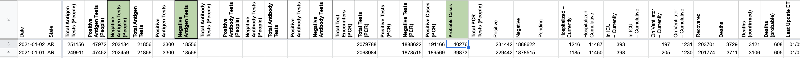
#1038: [AR] Patch late 01/01 update
Issue number 1038
hmhoffman opened this issue on January 2, 2021, 1:45 PM PST
State: AR
Dates affected: 01/01
Describe the issue: On January 1, 2021, Arkansas updated their COVID-19 data dashboard after our daily update.
Comments
Rows edited: 1 AR 2021-01-01 positive: 229442 (was 225138) negative: 1878515 (was 1864704) hospitalizedCurrently: 1185 (was 1195) inIcuCurrently: 398 (was 396) onVentilatorCurrently: 205 (was 209) recovered: 201774 (was 199247) death: 3711 (was 3676) deathConfirmed: 3106 (was 3088) deathProbable: 605 (was 588) probableCases: 39873 (was 38354) totalTestsViral: 2068084 (was 2051488) negativeTestsViral: 1878515 (was 1864704) positiveCasesViral: 189569 (was 186784) totalTestsPeopleAntigen: 249911 (was 246022) positiveTestsPeopleAntigen: 47452 (was 45818) negativeTestsPeopleAntigen: 202459 (was 200204) dateChecked: 2021-01-02 21:51:00+00:00 (was 2021-01-01 23:25:00+00:00)
#1026: [AR] Patch 12/24 late update
Issue number 1026
hmhoffman opened this issue on December 24, 2020, 4:16 PM PST
State: AR
Dates affected: 12/24
Describe the issue: On December 24, 2020, Arkansas did not update their COVID-19 dashboard by the time of our daily update.
Comments
Rows edited: 1 AR 2020-12-24 positive: 211145 (was 207941) negative: 1811933 (was 1796073) hospitalizedCurrently: 1093 (was 1110) inIcuCurrently: 360 (was 340) onVentilatorCurrently: 178 (was 174) recovered: 184335 (was 182024) death: 3406 (was 3376) deathConfirmed: 2946 (was 2939) deathProbable: 460 (was 437) probableCases: 34005 (was 33159) totalTestsViral: 1989073 (was 1970855) positiveTestsViral: None (was 174782) negativeTestsViral: 1811933 (was 1796073) positiveCasesViral: 177140 (was 174782) totalTestsPeopleAntigen: 221177 (was 216498) positiveTestsPeopleAntigen: 40784 (was 39849) negativeTestsPeopleAntigen: 180393 (was 176649)
#999: [AR] Patch late 12/09 update
Issue number 999
hmhoffman opened this issue on December 10, 2020, 6:06 AM PST
State: AR
Dates affected: 12/09
Describe the issue: On December 9, 2020, Arkansas updated their COVID-19 dashboard after the time of our daily update.
Comments
#984: [AR] Patch 11/28 late update
Issue number 984
hmhoffman opened this issue on November 28, 2020, 9:33 PM PST
State: AR
Dates affected: 11/28
Describe the issue: On November 28, 2020, Arkansas did not update their Total antigen tests (people), Positive antigen tests (people), Negative antigen tests (people), Total PCR tests (specimens), Negative PCR tests (specimens), Positive PCR tests (people), Probable cases, Cases (confirmed + probable), Negative PCR tests (people), Recovered, Deaths (confirmed + probable), Deaths (confirmed), or Deaths (probable) before the time of our daily update.
Comments
Rows edited: 1 AR 2020-11-28 positive: 155026 (was 153677) negative: 1529514 (was 1521090) recovered: 135614 (was 134312) death: 2449 (was 2436) deathConfirmed: 2249 (was 2237) deathProbable: 200 (was 199) probableCases: 18955 (was 18773) totalTestsViral: 1665585 (was 1655994) negativeTestsViral: 1529514 (was 1521090) positiveCasesViral: 136071 (was 134904) totalTestsPeopleAntigen: 134910 (was 133559) positiveTestsPeopleAntigen: 22878 (was 22570) negativeTestsPeopleAntigen: 112032 (was 110989) dateChecked: 2020-11-29 05:39:00+00:00 (was 2020-11-28 22:58:00+00:00)
#890: [AR] Patch data from dash 10/7
Issue number 890
hmhoffman opened this issue on October 8, 2020, 7:42 AM PDT
Labels Data quality
State: AR
Dates affected: 10/7
Describe the issue: On 10/7 the AR dash was not updated by the time we published. Cur. hosp and cur. icu were used from the page graphic, however we have decided that going forward we will follow source notes and carry over these metrics if necessary. We should patch 10/7 cur. hosp and cur. icu from the dash in addition to other values which we normally source from the dash.
Links: https://covid-tracking.slack.com/archives/C01B0EGJ3J9/p1602164560246400
Comments
BEFORE: 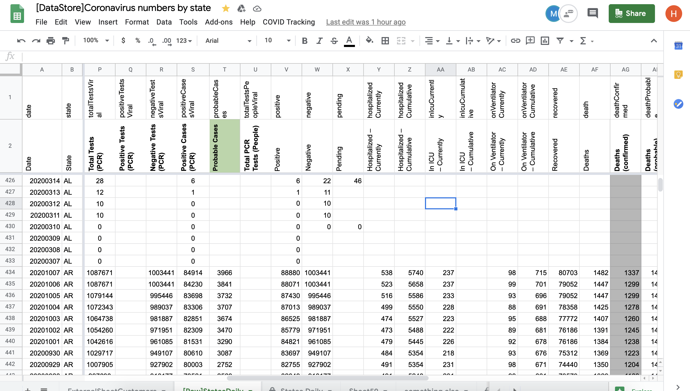 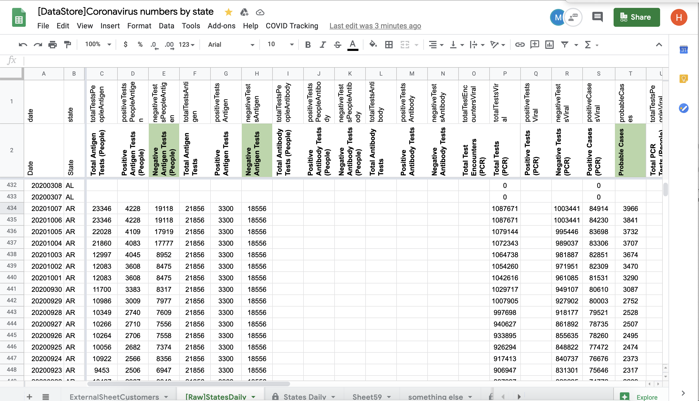
AFTER: 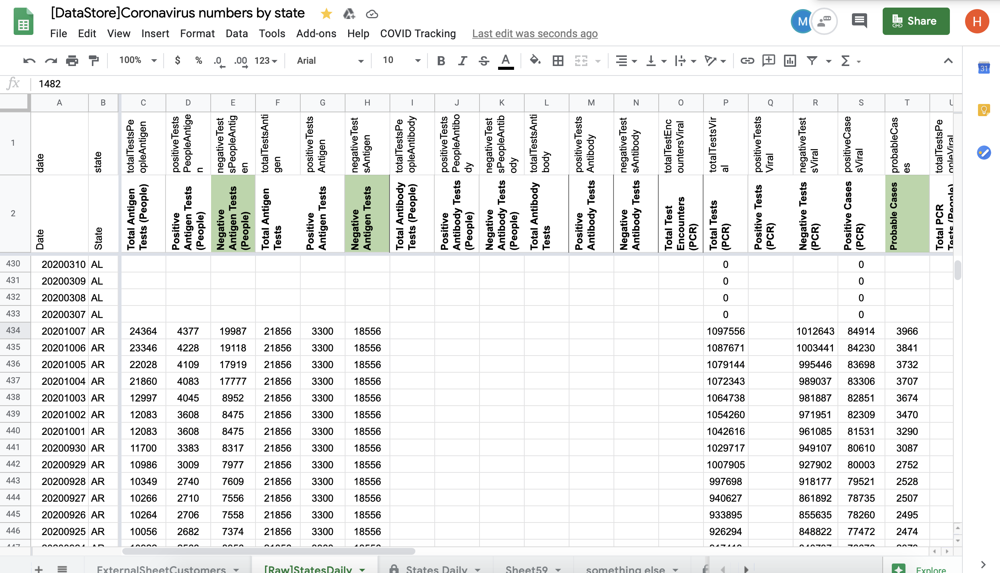 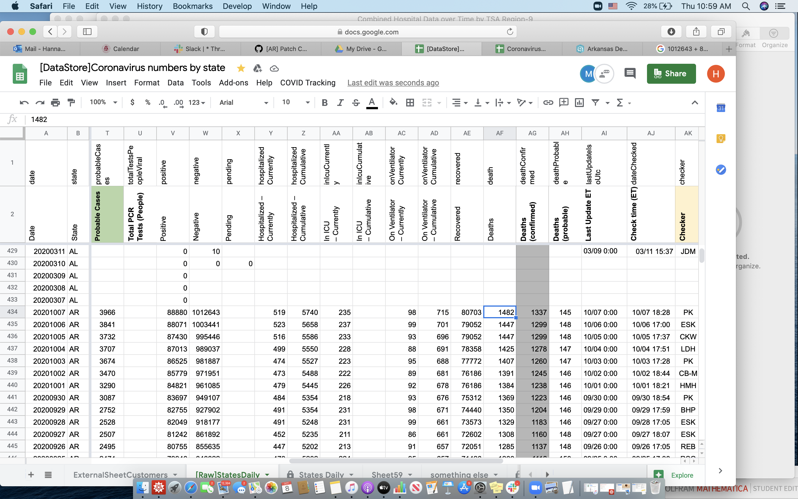
#856: [AR] Incorrect Recoveries source for 9/20
Issue number 856
the-daniel-lin opened this issue on September 22, 2020, 7:07 AM PDT
Labels Data quality
State or US: Arkansas
Describe the problem On 9/20, we updated recoveries using the value reported on the dashboard, not the graphic on the state page. This caused the recoveries time series to increase and then drop. Backfilling with the graphic value in order to have a more consistent time series while we investigate which source is the best/most consistent one.
Changing from 67853 to 66397
Link to data source

Comments
BEFORE: 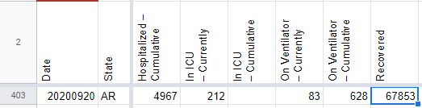
AFTER: 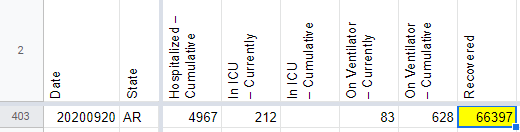
#853: [AR] Backfill hosp. values on 9/18 and case values on 9/19
Issue number 853
the-daniel-lin opened this issue on September 21, 2020, 7:58 AM PDT
Labels Backfill Data quality Historical Data
State or US: Arkansas
Describe the problem There were issues with broken/unupdated/lagged hospitalization and case/test values on 9/18 and 9/19. Current screen captures do not record testing data from those days.
Link to data source 9/18: https://covid-tracking-project-data.s3.us-east-1.amazonaws.com/state_screenshots/AR/AR-20200920-000419.png 9/19: https://covid-tracking-project-data.s3.us-east-1.amazonaws.com/state_screenshots/AR/AR-20200920-060438.png https://covid-tracking-project-data.s3.us-east-1.amazonaws.com/state_screenshots/AR/AR-secondary-20200920-120448.png
Comments
BEFORE 9/18: 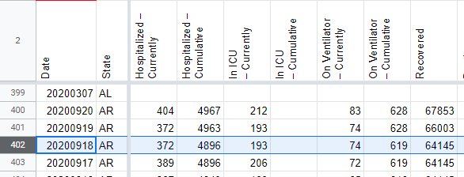
AFTER 9/18: 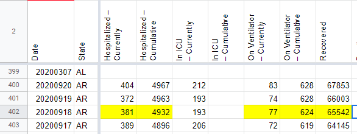
BEFORE 9/19: 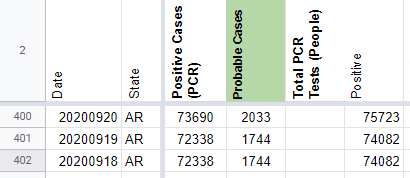
AFTER 9/19: 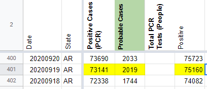
#827: [AR] Lots of dashboard updates
Issue number 827
karaschechtman opened this issue on September 14, 2020, 8:39 AM PDT
Labels Data quality
State or US: AR
Describe the problem AR updated its dashboard with new sources, we need to change our capture and patch our handling on 9/13 (and 9/12 for hospitalizations)
Negative Tests (PCR) and Negative (People or Cases) - PCR negatives from dashboard, no backfill because incomplete timeseries, but start using the numbers, patch yesterday and write a public note Total Tests (PCR) - PCR negatives + PCR positives from dashboard, no backfill because incomplete time-series, but start using the numbers, patch yesterday and write a public note Positive Tests (PCR) - leave the same (empty); the PCR number is cases Positive, Confirmed Cases, Probable Cases - start getting them from the dashboard and patch yesterday Antigens - submit outreach about the gap between their dashboard and the PDF, keep collecting yesterday’s Deaths for Deaths (confirmed and probable) - we will patch yesterday’s and start using the breakdown Cur hospitalizations - patch 9/12 from page graphic, add warning note Cur vent - patch 9/12 from page graphic, add warning note Cur ICU - keep as using dash Recovered - patch 9/12 and 9/13 from page graphic, add warning note
Data sources
9/13 tests
 9/13 deaths
9/13 deaths

9/12 deaths
 SEptember 13 hosp graphics
https://covidtracking.com/screenshots/AR/AR-20200913-180445.png
September 12 Hosps graphics
https://covidtracking.com/screenshots/AR/AR-20200912-180422.png
September 12 cases
https://covidtracking.com/screenshots/AR/AR-secondary-20200913-180451.png
SEptember 13 hosp graphics
https://covidtracking.com/screenshots/AR/AR-20200913-180445.png
September 12 Hosps graphics
https://covidtracking.com/screenshots/AR/AR-20200912-180422.png
September 12 cases
https://covidtracking.com/screenshots/AR/AR-secondary-20200913-180451.png
Comments
Source note changes to Worksheet2 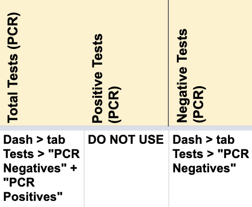 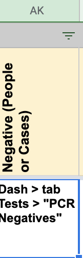 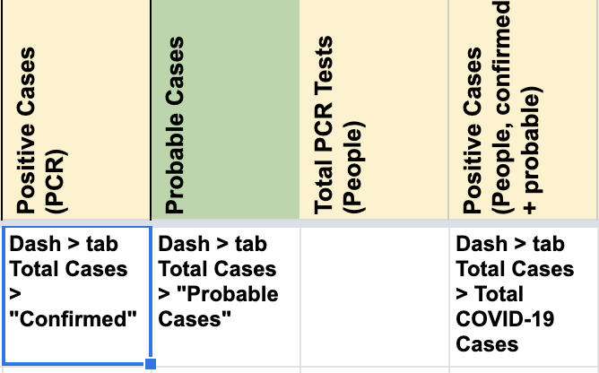 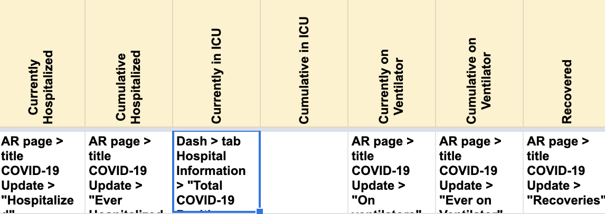 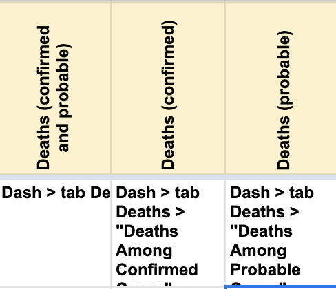
Patches from 9/13 of cases and tests Before 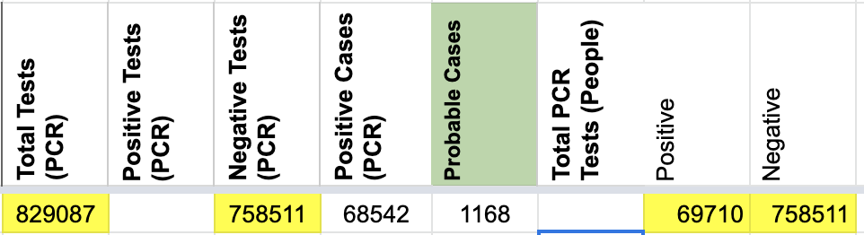 After 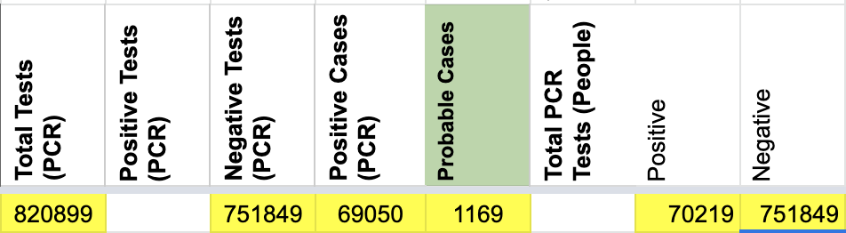
Hospitalizations changes
Before 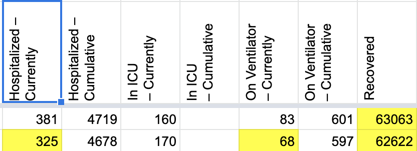
After 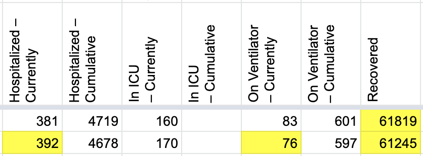
Deaths changes Before 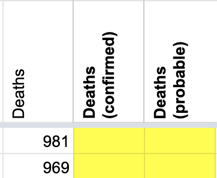 After 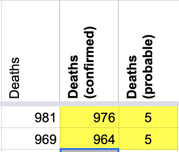
#816: [AR] Back-fill antigen and probable cases numbers starting 9/3
Issue number 816
muamichali opened this issue on September 7, 2020, 11:14 AM PDT
Labels Data quality
State or US: Arkansas
Describe the problem Starting 9/3 Arkansas started providing the information about Total Antigen Tests, Positive Antigen Tests, Negative Antigen Tests and Probable Cases. This is to backfill the information from those days.
Link to data source Upload PDFs here please
Comments
September 3: 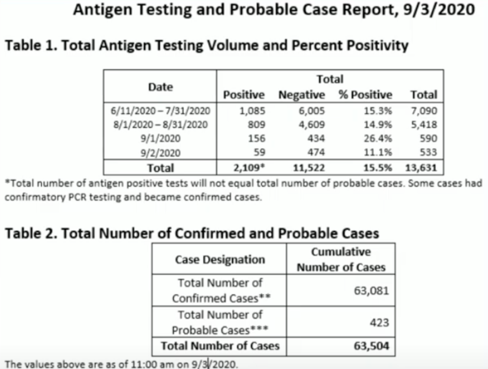
September 4: 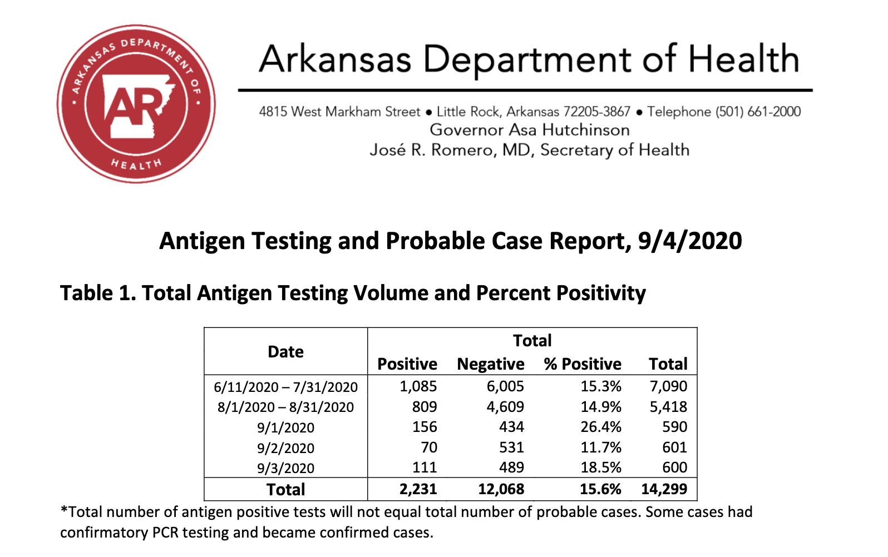
September 5 and 6 (same PDF both days): 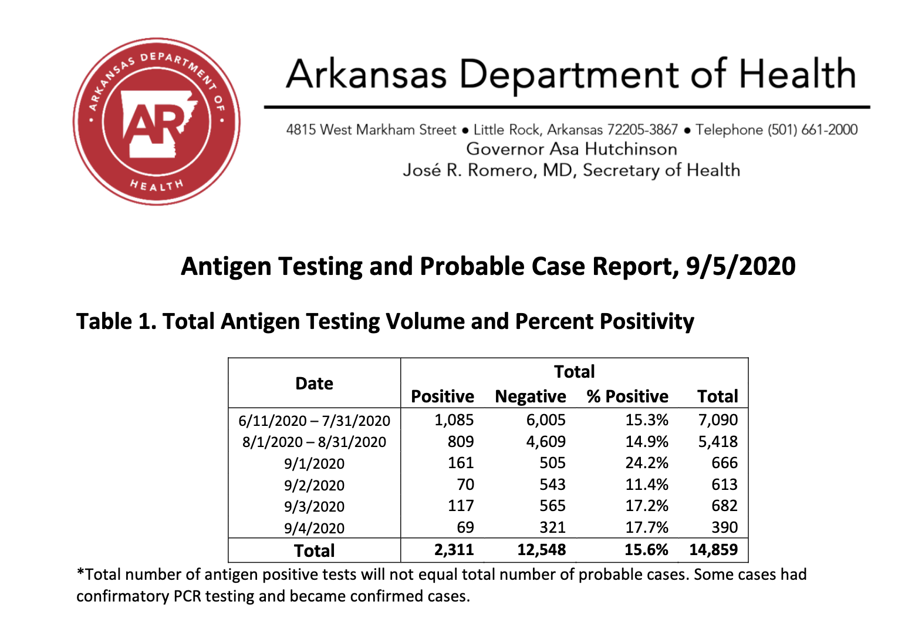
We should also backfill back to 6/11 using the values provided in the chart
Before 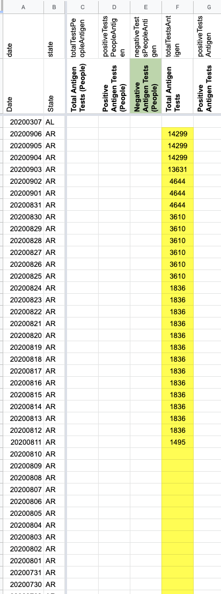 After Note: It looks like the totals were consistently backfilled for 9/1 and 9/2 (and 9/3 and 9/4) resulting in different deltas in each day of the report. I used the least recent deltas from 9/3 to make the math work so that the numbers for 7/31-8/31 would sum to the subtraction and to keep the timeseries continuous with the explicit "totals" field that I was drawing from for the 9/3 value. This also gets us closest to the "date reported" meaning of these column.
For flat line data before 8/31: Because the time ranges represent all the testing done that range, I think we can only associate them with the last day of each range onward instead of applying it to the beginning of the range. This gets us back to 7/31 rather than 6/11.
9/2 = 13631 - 533 = 13098 9/1 = 13098 - 590 = 12508 8/31 = 7090 + 5418 = 12508 7/31 - 8/30 = 7090 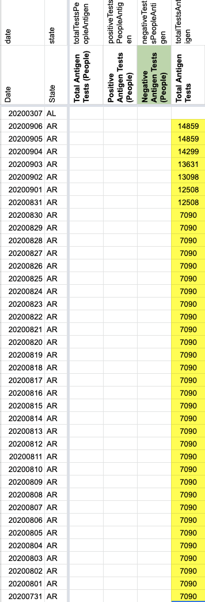
Positive and negative
Applying the same principles of applying updates only from the last day of the range onward and using the deltas from the 9/3 screenshot.
Before 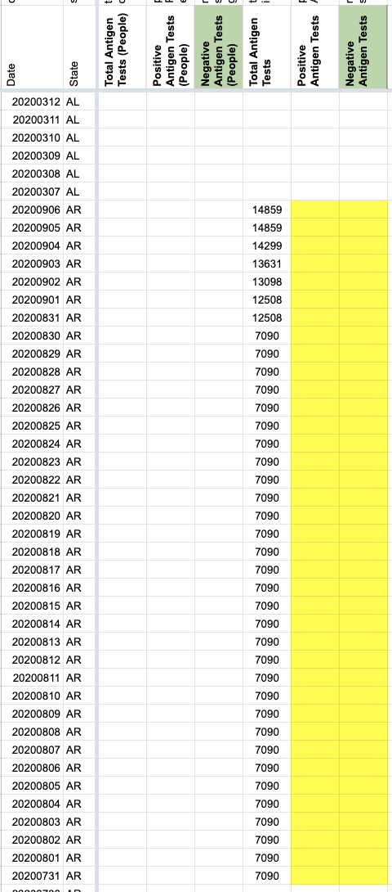
After negative calculations 9/2 = 11522 - 474 = 11048 9/1 = 11048 - 434 = 10614 8/31 = 6005+4609 = 10614 7/31 - 8/30 = 6005
positive calculations 9/2 = 2109 - 59 = 2050 9/1 = 2050 - 156 = 1894 8/31 = 1085+809 = 1894 7/31 - 8/30 = 1085
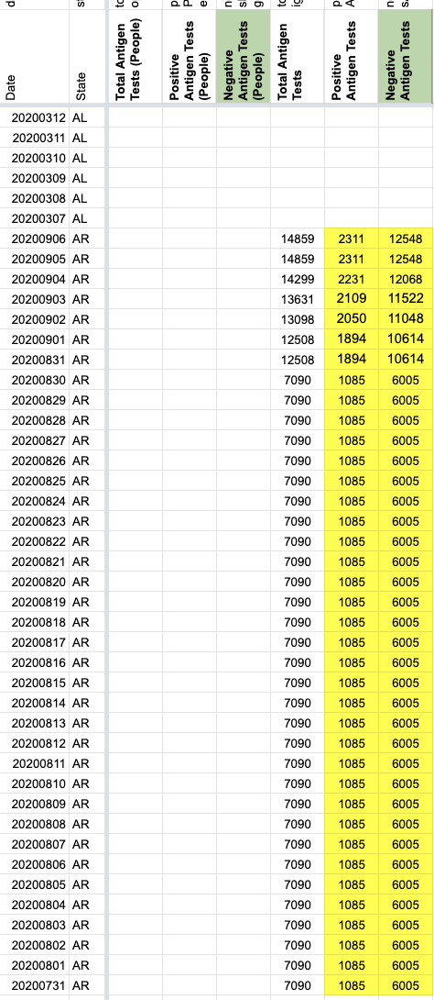Probable Cases also affects totals and confirmed (since we want to grab them from the PDF). resulted in overriding yesterday's confirmed value
9/5 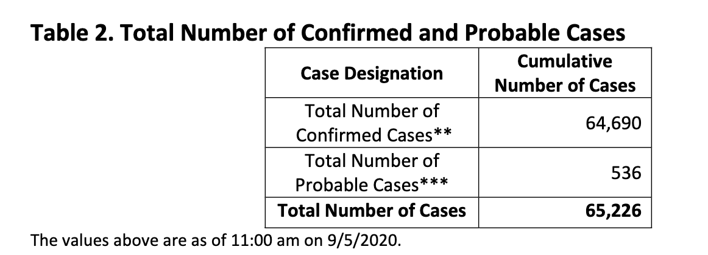
9/4 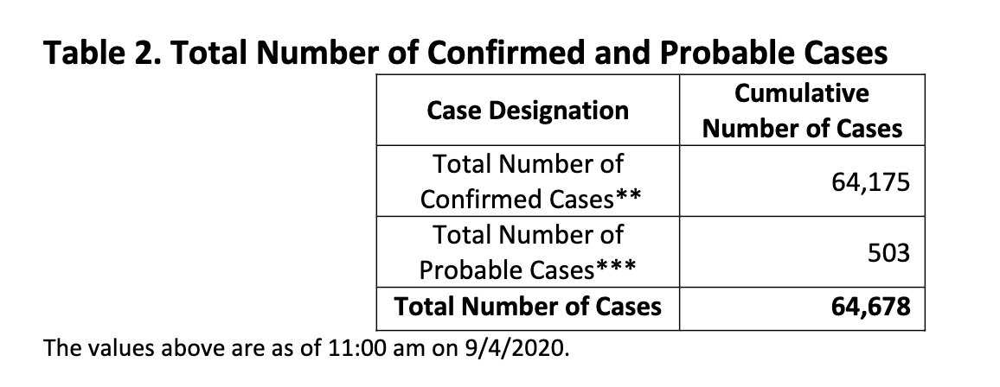
9/3 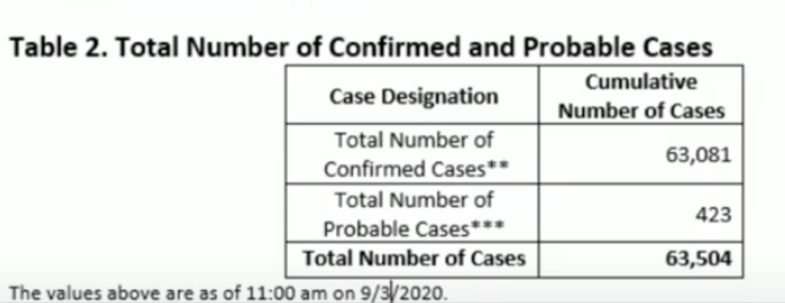
Before 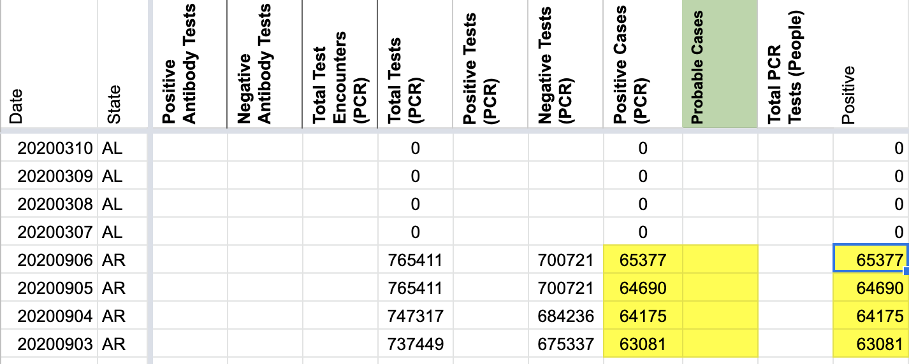
After 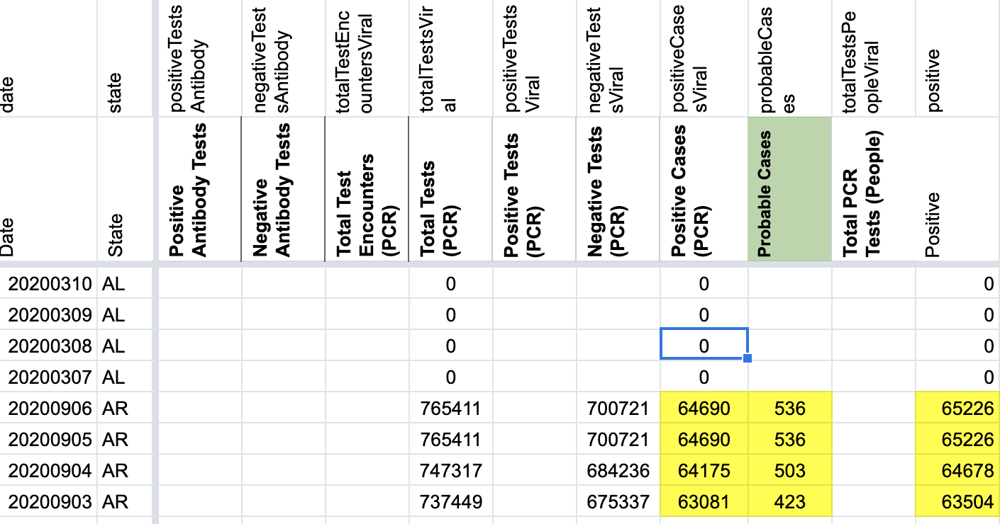
#815: AR - including pos and neg antigen numbers in a table with slides
Issue number 815
whobody opened this issue on September 4, 2020, 2:18 PM PDT
Labels Data quality
State or US: [State name, or "US" if this is an issue with country-wide data] AR
Describe the problem AR has a table they have provided two days in a row with pos and neg antigen results. We should backfill and start collecting this data during pub shift (when available).
Link to data source https://covid-tracking.slack.com/archives/CUQ4MMTPD/p1599248272194300?thread_ts=1599248268.194200&cid=CUQ4MMTPD
https://covid-tracking.slack.com/files/U01489QMX99/F01A503QPRQ/total_cases_by_case_status_09042020.pdf?origin_team=TUPV6BFR9&origin_channel=Vall_threads
Comments
This is being worked on in issue https://github.com/COVID19Tracking/issues/issues/816
#792: [AR] Antigen totals fix
Issue number 792
karaschechtman opened this issue on August 26, 2020, 11:47 AM PDT
Labels Data quality
State or US: AR
Describe the problem AR shared a value for its total number of antigens verbally in a presser on 8/20 (10,358: see 2:33 in https://www.youtube.com/watch?v=_cqwYiMx7EY) significantly higher than what we found on the slides they post on their website a few days later on 8/25 (3,610 tests in https://www.healthy.arkansas.gov/images/uploads/pdf/briefing_slides_8_25.pdf). We have conducted outreach to ask why this discrepancy exists and for a full time series of the metric. In the mean time we are carrying over the old value (1836) from 8/20-8/24 and using 3,610 from 8/25 onward.
Link to data source https://www.healthy.arkansas.gov/images/uploads/pdf/briefing_slides_8_25.pdf
Comments
before 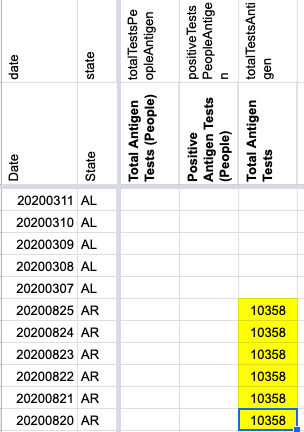
after 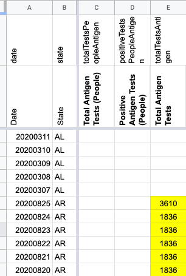 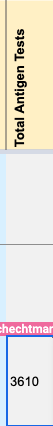
#748: [AR] SVP Fixes; Move 3/6-7/3 values from Total PCR Tests (People) to Total Tests (PCR) since reporting units are unclear
Issue number 748
jesseandersonumd opened this issue on August 11, 2020, 7:04 AM PDT
Labels Backfill Historical Data
State: Arkansas
Dates impacted: pre-7/3 (inclusive)
Issue: Prior to 7/3, CTP was capturing total tests in Total PCR Tests (People), after 7/3 we started reporting total tests in Total Tests (PCR). But, we are still reporting negative tests in people, even though negatives are reported in specimens. We think we should copy negative tests from people to Negative Tests (PCR) KEEP all values in Negative (People or Cases) and copy values to Negative Tests (PCR) to reflect the fact that negatives are reported in specimens as confirmed by outreach. We also think we should move total tests pre-7/3 to Total Tests (PCR) from Total PCR Tests (People). We should also flag that the AR total tests number is calculated by (positives cases (people) + negatives tests (specimens)). :(
Action Plan:
- [x] Start Capturing in Negative Tests (PCR)
- [x] Move Total PCR Tests (People), captured from 3/6-7/3 to Total PCR Tests (People) AR Moved Values from Total Tests PCR People to Total Tests PCR.txt
Comments
Interim changes: Negatives are now listed in both Negative Tests (People or Cases) and Negative Tests (PCR)
1/2: WS2 Before: 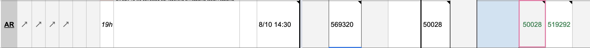 After: 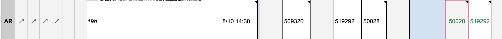
2/2: States Matrix Before: 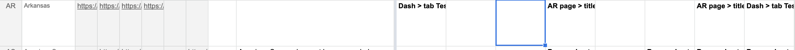 After: 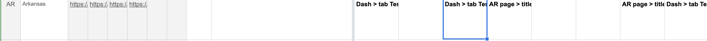
Moved 3/6 - 7/3 values from Total Tests PCR (People) to Total Tests (PCR) - the values moved are recorded in a txt CSV file in the issue description.
#612: [AR] PCL Cases Historicals
Issue number 612
pscsharon opened this issue on July 13, 2020, 7:06 AM PDT
Labels Backfill PCL/SVP Historicals
Arkansas has been reporting Confirmed-Cases since Mar 27th when they started using the arcgis dashboard. Different than other states, AR reported Confirmed-Cases only on their State website instead of the dashboard for a while. Even up to the current day, AR uses the phrase "Total Cases" in its arcgis instead of "Confirmed Cases."
Please backfill confirmed cases back through Mar 27th.
Background:
Screenshots: http://covid-tracking-project-data.s3-website.us-east-1.amazonaws.com/state_screenshots/AR/
WS2 instructions:

States' Daily:

Comments
Mar 27th screenshots from archive:
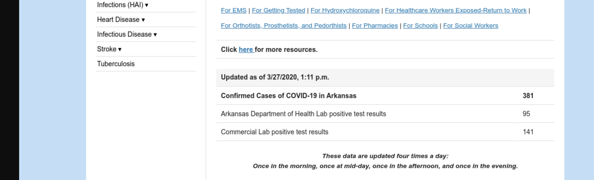 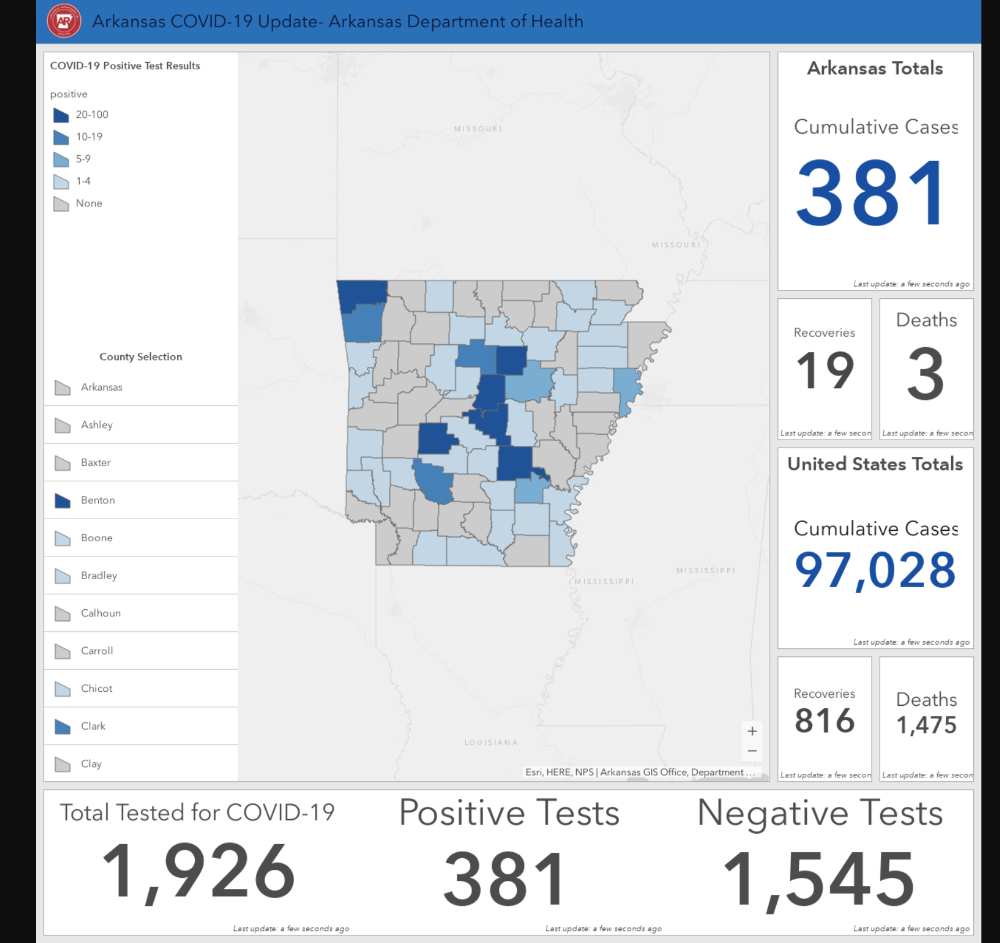It was verified that AR always reported confirmed cases through screenshots. Numbers copied to column V on States Daily accordingly. A gap in confirmed cases website screenshots exists in mid- to late March after the rollout of a new dashboard, but it can be inferred that these numbers also refer to confirmed cases due to (1) a consistent time-series and (2) the website always mirroring the dashboard, and the website indicating that it reports only confirmed cases after the introduction of dual screenshots. Before: 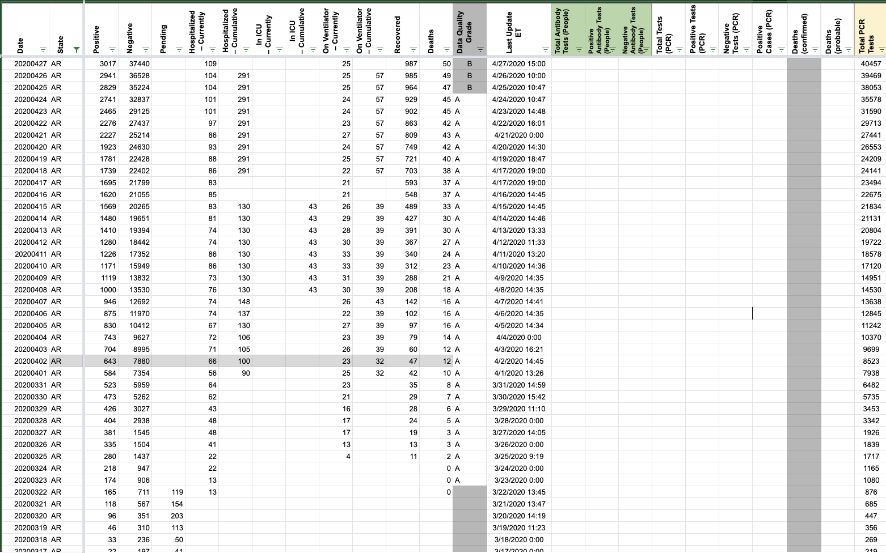 After: 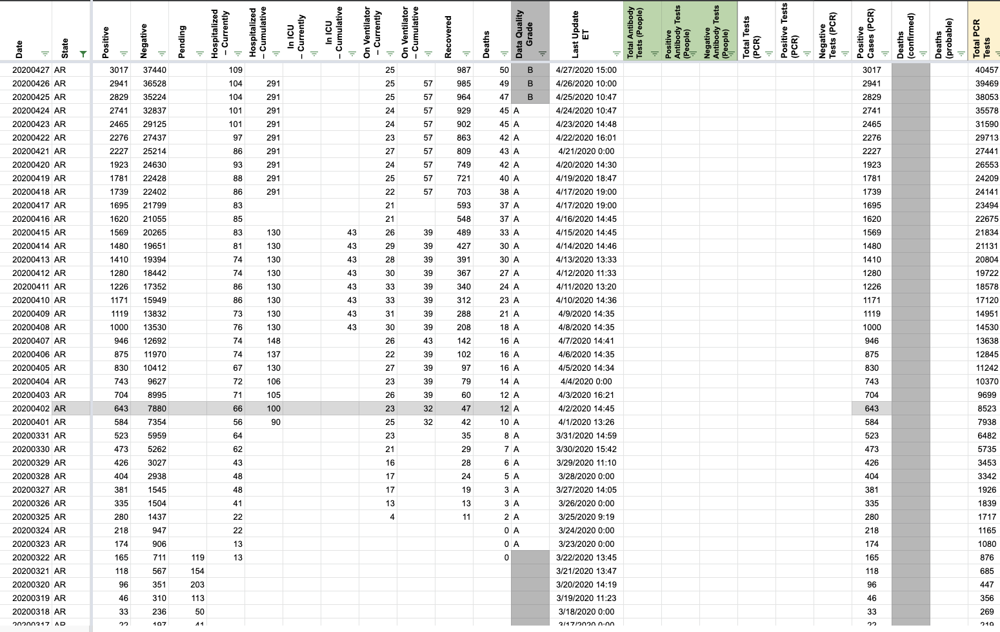
Double Checked. Nice work, Brian!
#584: [AR] Historicals -Updates occurred after pub shift
Issue number 584
schmian opened this issue on July 8, 2020, 10:56 AM PDT
Labels Data quality Historical Data stale
AR data was updated after the pub shift on multiple dates causing days of no change. For example "On June 13, the 6:30pm screen shot shows 12,095 cases but the data set shows 11,547."
The dates this affects are: 5/10, 5/23, 6/2, 6/4, 6/21, 6/26, 7/5
Comments
This issue has been automatically marked as stale because it has not had recent activity. It will be closed if no further activity occurs. Thank you for your contributions!
This issue has been closed because it was stale for 15 days, and there was no further activity on it for 10 days. You can feel free to re-open it if the issue is important, and label it as "not stale."
#575: [AR] SVP Historicals and WS2
Issue number 575
jaclyde opened this issue on July 3, 2020, 6:59 PM PDT
Labels Data quality stale
We have been recording AR's Total Tests as "Total PCR Tests (people)", however we received information from outreach that they are (partly) specimens. Need to move values to column "Total Tests (PCR)."
See --- AR 6/26 SvP Update --- in Slack for details.
Comments
I updated WS2 (source note was also moved). 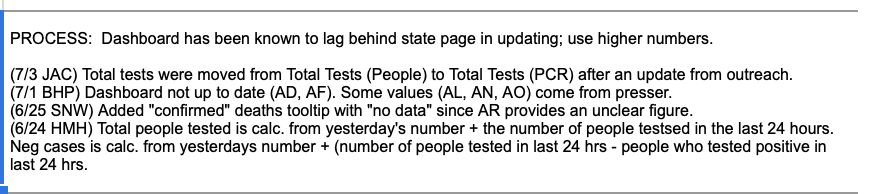 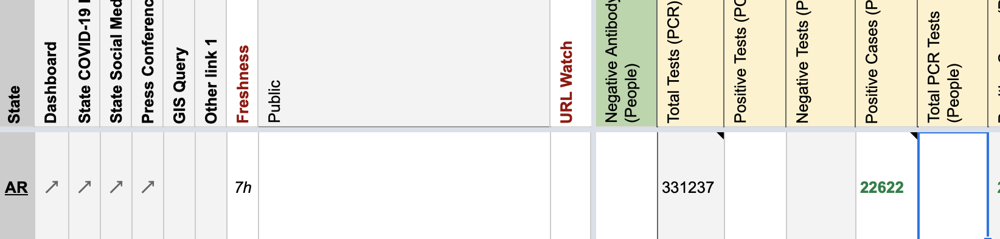
Before we move the column, a couple concerns: (a) Before 5/15, the column is calculated via formula. Are there really supposed to be formulas on States Daily? (b) From 5/12 to 5/14, the formula adds "Positive Cases (PCR)" to Negatives. This doesn't seem like something we want to put in "Positive Tests (PCR)" (c) Before 5/12, the formula is Positives + Negatives.
This issue has been automatically marked as stale because it has not had recent activity. It will be closed if no further activity occurs. Thank you for your contributions!
This issue has been closed because it was stale for 15 days, and there was no further activity on it for 10 days. You can feel free to re-open it if the issue is important, and label it as "not stale."
#538: [AR] PCL Historicals and WS2
Issue number 538
pscsharon opened this issue on June 25, 2020, 3:51 PM PDT
Labels PCL/SVP Historicals
Death values are historically recorded in both the "Deaths" and "Deaths (Confirmed)" columns for AR for only 6/15 - 6/23. However, AR's death values are unclear about what they represent, so they should only be recorded in the main "Deaths" field.
Comments
Added tooltip to the Confirmed-deaths cell and also added note in Process-notes.
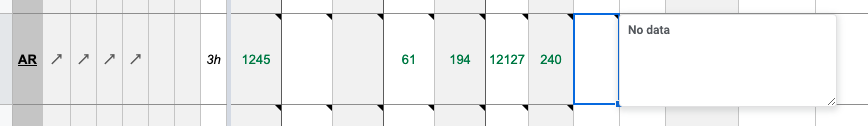
Deleting values from Confirmed Deaths column that were captured 6/15-6/23
BEFORE 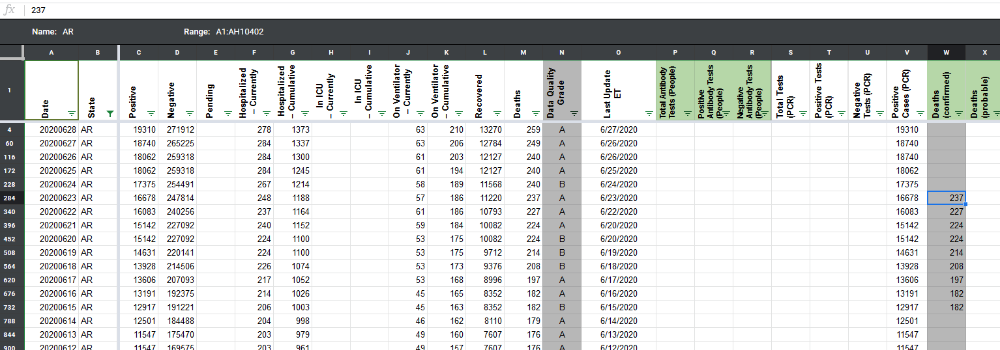
AFTER 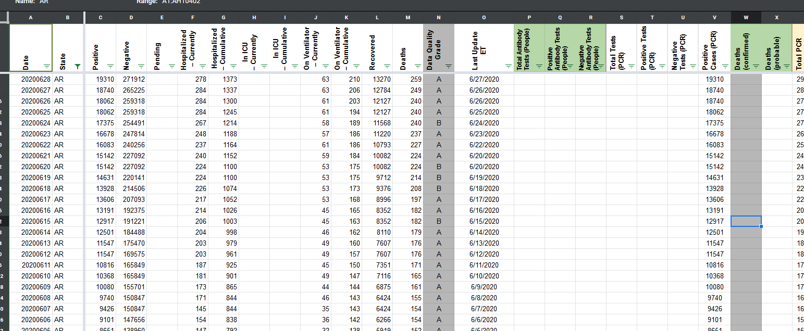
#430: AR - 4/22 & 5/5 have -1 deaths
Issue number 430
scarson opened this issue on May 17, 2020, 7:00 PM PDT
While potentially accurate to the state record, negative cumulative values cause problems for modeling. We could not verify the source of the death values as the AR "Death Maps" do not appear in the linked screenshots.
{kind=link}
Deaths 4/20 - 42 4/21 - 43 (+1) 4/22 - 42 (-1) 4/23 - 45 ... 5/3 - 76 5/4 - 81 (+5) 5/5 - 80 (-1) 5/6 - 85
@thaynedye @dcmoyer
Comments
Thanks for reporting this issue@scarson
We have secondary screenshots of AR available at http://covid-tracking-project-data.s3-website.us-east-1.amazonaws.com/state_screenshots/AR/ that show deaths reported. We will review them for the dates in question, and make adjustments based on our findings. I will update the ticket when I have more information.
Hi Sam, Thanks for reporting the issue. For 4/22, our screenshots from two separate timestamps show both 42 and 43 deaths reported. We are reporting 42 deaths for 4/22, based on Arkansas’s COVID-19 update on 4/22.
For 5/5, our screenshots show 80, 82 and 83 deaths reported from three separate timestamps dated from 5/5 and 5/6. We will revise from 80 to 83 deaths for 5/5, based on Arkansas’s COVID-19 update on 5/5.
BEFORE:
AFTER:
Thanks, Camille
#290: [States Daily CSV] AR deathIncrease is negative for 2020-04-22
Issue number 290
acobolew opened this issue on April 24, 2020, 9:23 PM PDT
Labels not stale
AR deathIncrease is negative for 2020-04-07:
library(data.table) covidtracking.dt <- fread('https://covidtracking.com/api/v1/states/daily.csv') covidtracking.dt[, date := as.Date(as.character(date), '%Y%m%d')] covidtracking.dt[order(date, decreasing=FALSE)][ , .(date, state, death, deathIncrease) ][deathIncrease < 0] date state death deathIncrease 1: 2020-04-05 VA 51 -1 2: 2020-04-07 DC 22 -2 3: 2020-04-22 AR 42 -1 4: 2020-04-23 PA 1421 -201 5: 2020-04-24 KS 111 -1 6: 2020-04-24 TN 168 -2
Comments
This issue has been automatically marked as stale because it has not had recent activity. It will be closed if no further activity occurs. Thank you for your contributions!
This issue has been closed because it was stale for 15 days, and there was no further activity on it for 10 days. You can feel free to re-open it if the issue is important, and label it as "not stale."
Rows edited: 1 AR 2021-02-25 hospitalizedCumulative: 14714 (was 14649) onVentilatorCumulative: 1516 (was 1509)